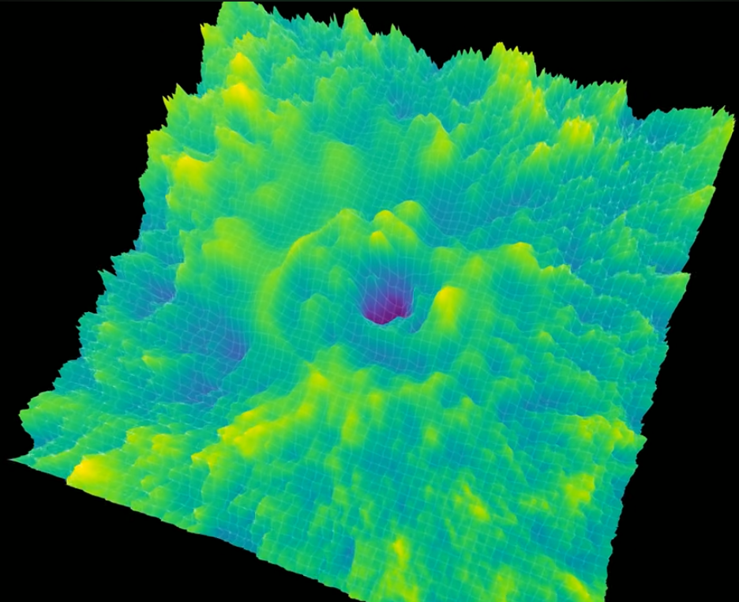
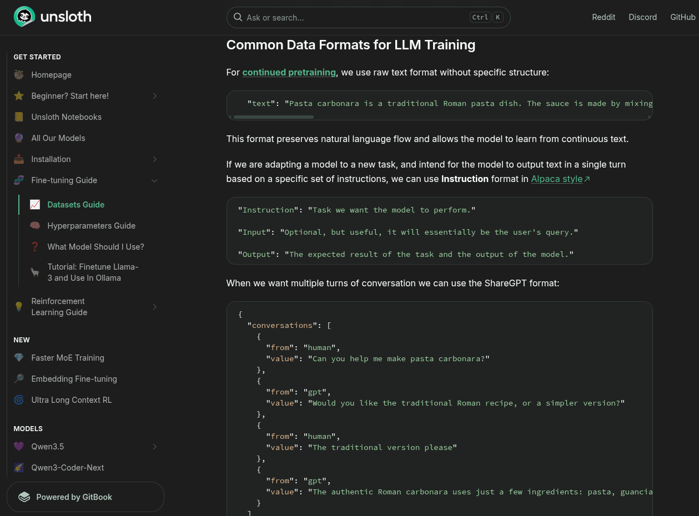
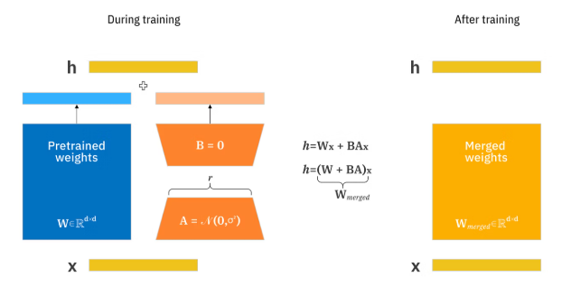

From Chinese lab jailbreaks to QLoRA — the mechanics behind modern LLM training
Use → / Space to advance · F for full-screen · ? for keyboard help
Anthropic's blog post — "The Distillation Attack on Claude's Extended Thinking"
Modern "reasoning" models (Claude 3.7, o1, DeepSeek-R1 …) have two output streams:
Researchers at several Chinese AI labs crafted system prompts that instructed the model to include its thinking verbatim in the final response.
Those outputs were then used as training data to distil Claude's reasoning capabilities into smaller, locally-runnable models.
Despite Anthropic calling it a "distillation attack", what the labs are doing is not true knowledge distillation.
So what the labs are actually doing is closer to:
Even without logits, using a powerful teacher model to generate training data is surprisingly effective. Claude's text outputs reflect high-quality reasoning, formatting, and domain knowledge built up at enormous cost.
Claude (large, expensive, proprietary)
DeepSeek-R1 / Qwen (smaller, local, open)
Forward Pass → Loss → Backpropagation → Update

Data flows left → right through the network. Each layer transforms its input:
y = activation(W @ x + b)For a language model the final layer produces a probability distribution over the vocabulary (via softmax) — one probability per possible next token.
After the forward pass we compare the model's prediction ŷ to the true target y using a loss function.
ℒ = −Σ y · log(ŷ)
Penalises the model for assigning low probability
to the correct token.
ℒ_KL = Σ p_teacher · log(p_teacher / p_student)
Measures how much the student's distribution
differs from the teacher's full distribution.
Backprop computes ∂ℒ/∂W — how much each weight contributed to the loss — using the chain rule in reverse.
W ← W − η · ∂ℒ/∂Wη (eta) is the learning rate — how large each step is.
Language models are trained with a simple self-supervised objective:
"The cat sat on the",
predict "mat".
No human labels needed — every text document is its own training signal.
The model outputs a probability over all ~32,000 vocabulary tokens. Cross-entropy loss pushes the probability of the correct next token toward 1.
Teaching a small model by imitating a large model's output distribution
Target: [0, 0, 1, 0, …]
Only the single correct token gets probability 1.0;
all other tokens get 0.
Information-sparse.
Target: teacher's full distribution
[0.001, 0.05, 0.55, 0.15, …]
Every token carries information about similarity/relatedness.
Much more information per step.
True logit-level distillation requires access to the teacher's internal probability distribution — unavailable via any public API. The dataset distillation approach only needs the teacher's text outputs:
Query the teacher model with many prompts → collect text responses
Filter, clean, and format as instruction-response pairs
Standard SFT on student model using teacher-generated data
Taking a pre-trained model and specialising it for a task

Each training example follows a chat template:
{
"instruction": "Build a single-page HTML portfolio website",
"input": "",
"output": "<!DOCTYPE html><html>...</html>"
}This is formatted using the model's chat template and fed to the trainer as a labelled sequence:
[SYSTEM] You are an expert web developer…
[USER] Build a single-page HTML portfolio website
[ASST] <!DOCTYPE html><html>…</html> ← loss computed here onlyFine-tuning billions of parameters on a single GPU

A 7B parameter model stores each weight as a 16-bit float:
Most researchers only have 8–24 GB consumer GPUs. How can we fine-tune such large models?
🏋️
Can barely load a 7B model in fp16,
let alone fine-tune it.
💡
Train only ~0.1–1% of parameters,
same result.
Hu et al., 2021. Instead of updating the full weight matrix W directly, freeze W and learn two small matrices A and B:
The empirical observation behind LoRA is that weight updates during fine-tuning tend to be low-rank — they lie in a small subspace of the full parameter space.
Fine-tuning is not changing the model's fundamental understanding of language — it is adjusting a relatively small set of task-specific features.
Dettmers et al., 2023. Combines LoRA with 4-bit quantisation of the frozen base weights.
7B model ≈ 56–84 GB VRAM
7B model ≈ 16–24 GB VRAM
7B model ≈ 6–8 GB VRAM ✓
Applied to Q, K, V, O, gate, up, down projections in every transformer layer.
Chinese labs used jailbreaks to expose Claude's hidden thinking tokens and built training datasets from the output — but they only received text, not true soft labels. Technically: imitation learning, not distillation.
Forward pass → loss → backprop → weight update. LLMs predict the next token; loss penalises wrong predictions.
True distillation uses soft labels (teacher logits — KL divergence). SFT uses hard labels (text targets — cross-entropy). The labs did the latter with teacher-generated text.
Freeze the base model; learn two small matrices per layer. 4-bit quantisation + LoRA = fine-tune a 7B model on an 8 GB GPU.
Code: distillation/train_model.py & distillation_demo.ipynb